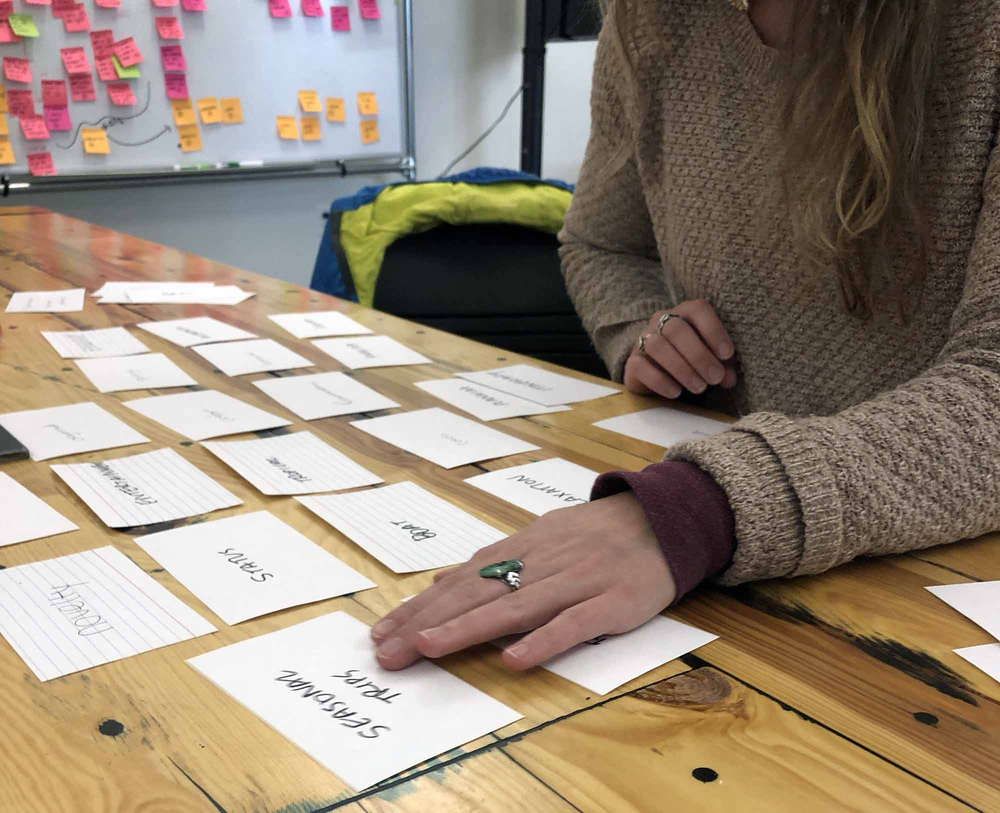
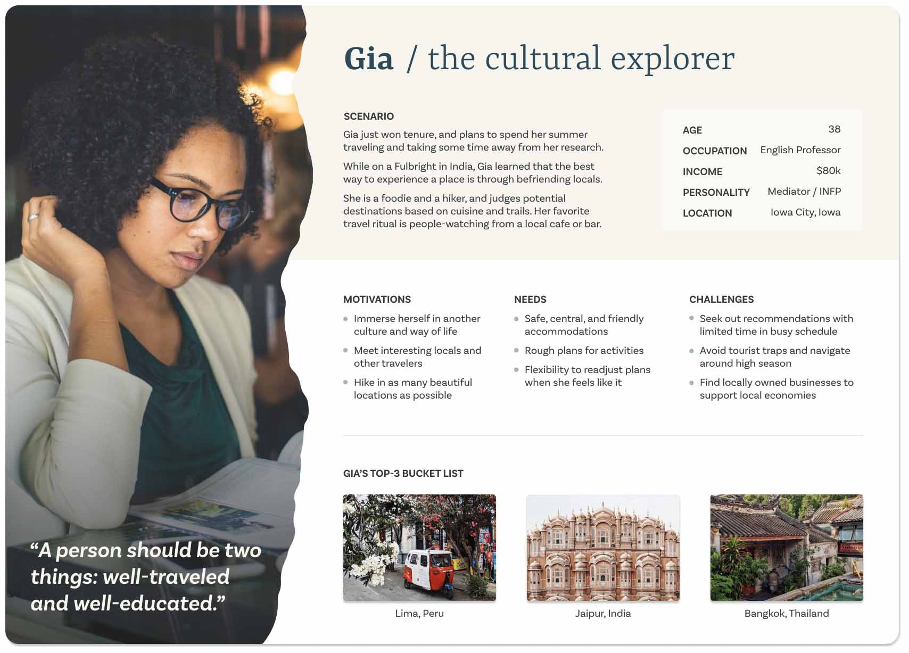
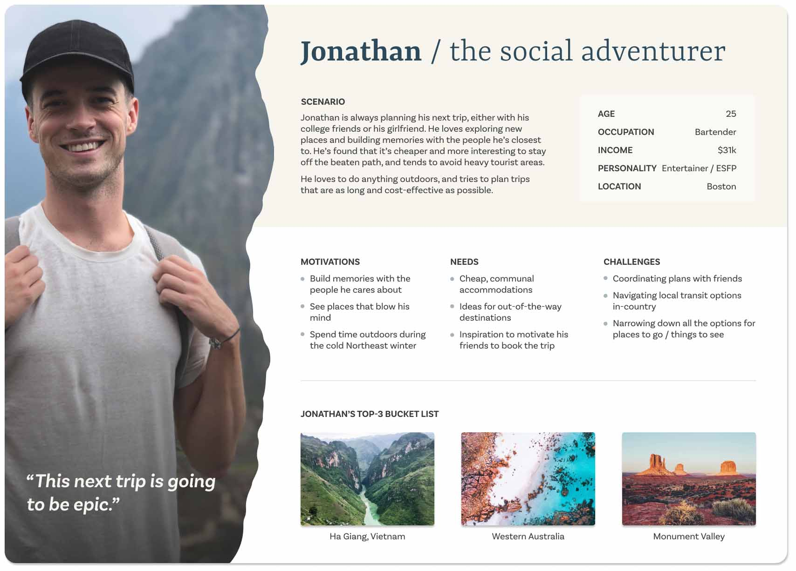
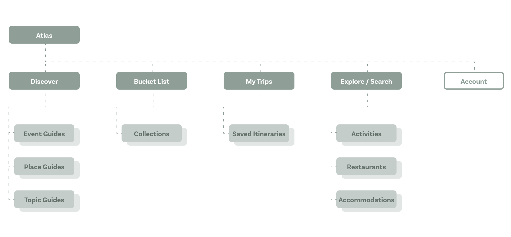

Atlas
An app that lets you be a local on vacation.
An app that lets you be a local on vacation.
Millennial travelers value authenticity when they travel, but uncovering that insider knowledge can be time-consuming. This is a huge opportunity to rethink the traditional travel guide, helping people feel less like tourists and more like locals.
Atlas collects insider recommendations from travel influencers and locals, then makes those tips easily discoverable through a content strategy based on the way millennial travelers build their real-life bucket lists.
Here's how the project evolved ↴
As a UX design student, I keep track of inconvenient things that bug me—the “duct tape” in life—because (1) it trains me to see the world through the lens of human-centered design, and (2) it uncovers opportunities for innovation. That’s how this project began, as an item on the Bugs Me list.
A friend traveling to Mexico City mentioned that she had used a crowd-sourced Google Sheet and Map List to find the best local gems, because none of the travel sites were “local enough.” Together with two of my classmates, I decided to explore ways to help travelers find the insider knowledge they needed to make every trip feel like it was guided by a local.
After the initial “aha!” moment, when we saw how travelers were crowd-sourcing authentic recommendations in Google sheets, we needed to dig deeper into how travelers plan their adventures. We wanted to know, “How do you decide where to go?” and “What makes or breaks a trip?” and “What does ‘authentic’ mean?”
To answer these questions and understand users better, we conducted secondary research (including travel media), interviews, and card sorts. Then, we synthesized our insights using personas, a mental model, and a UX collage. We ended up with 5 key insights:
During user interviews, we learned how travelers think about and plan their vacations. We found that travelers “collect” experiences, valuing unique and authentic meals, adventures, and serendipitous moments that add up to a one-of-a-kind trip. This collector’s mindset lends itself to daydreaming about future destinations long before the planning actually begins.
"Every trip should be your best trip. We want to do things and eat things that are totally unique."
—Ryan, 26
“I’m always chasing the best places to go climbing. I just got back from France.”
—Brizida, 35
“I’m always thinking about where I want to go next—right now I’m looking at Cambodia and Laos.”
—Jubilee, 29
During a series of card sorts, we wanted to understand where trip inspiration comes from and which recommendations are most trusted. We found that the most highly prized suggestions come from locals or trusted friends who have personal experience in a location.
As we began synthesizing our research and mapping out user personas, we saw a trend: our target travelers want to immerse themselves in a place by seeking out experiences that are culturally significant, but not overtly commoditized as tourist activities.
 We wanted to further understand how travelers plan their trips, so we mapped out the behaviors, thoughts, and feelings we discovered during research into a mental model. This exercise revealed a tendency for travelers to leave space in their trip plans for spontaneity. Tips from locals or fellow travelers, accidental discoveries, and serendipitous moments can make the most magical, memorable moments.
Sifting through insights, we discovered another pattern: travelers seek out a certain vibe that they experience as comfort away from home. As one traveler told us, “If there’s one whiff of corporatism, I’m not staying there.” Another mentioned that she was terrified of tourist traps and wanted to stay off the beaten path.
My team created a UX collage to help us translate this insight, along with the others we collected, into a visual medium and prioritize their impact on the MVP.

Based on our prioritized research insights, my team began a collaborative UX design process, starting with rapid sketching and force ranking. This was a great way to start visualize how research might translate into design and make sure we were aligned on the product’s core purpose.
As a result of this process, we ended up with 3 key features:
The core experience of Atlas is the discovery of tailored, authentic recommendations. We ideated a content strategy that would cross-link bookable products (accommodations, activities, and restaurants) with editorial content to enable themed discovery.
An onboarding quiz, in addition to cumulative user engagement patterns, feed into an algorithm that personalizes suggestions to match the user’s travel vibe.
Our insights show how travelers start planning their trips months before they book anything, so we designed a way for users to keep track of their bucket list items inside Atlas. They can save product pages or editorial content by location or theme, then easily book inside the app when they’re ready and check destinations off their bucket list.
When it comes to navigating your way around a new place, easy wayfinding is what makes travelers feel like locals. We developed a visual itinerary builder that allows users to understand proximity and transit while planning adventurous days and maintaining flexibility.
Here’s a look at how all the features fit together in the app’s information architecture. Content points toward product pages, and both content types can be saved in bucket lists for easy booking later on. Booked experiences populate itineraries, which allow for easy, on-the-go planning.
We originally designed the UI using Material Design guidelines. Once the UX was locked in, we translated the navigation structure and component styling to fit the Human Interface Guidelines.
In working on this project over the course of two months with two of my classmates, I had the opportunity to dive deep on process. Here are three of my biggest a-ha moments:
To uncover actionable insights, I used several methods for gathering and synthesizing data. This was an opportunity to hone my intuition on the question, “How much research is enough?”
Resources are almost always tight for real-world UX research. Therefore, it’s crucial to ask the right questions, adapt the best methods, and know when you have enough information to move forward. These skills will help me make the most of limited resources on future projects.
As designers, we talk a lot about user research and UX design, but we talk less about how to effectively bridge those two phases. However, I learned that the translation of research into design sets the stage for a strong UX strategy and product vision.
During this project, I explored different methods for doing that translation, including UX collage, ELITO insight documentation, and rapid sketching via IDEO’s 30 Circles Exercise and Crazy 8’s. This gave me the confidence and experience to turn a pile of research insights into a stack of rough feature concepts.
Atlas was my first heavily collaborative UX project, and even though my team members and I work well together, we were not practiced in the negotiation needed to make collective design work.
Early on, we started to rely on consensus and ended up spinning our wheels for a week. We took a step back to look at our research insights, then worked together to hash out a product vision based on research and not consensus.